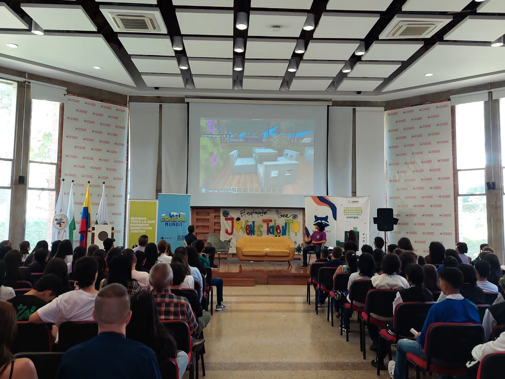
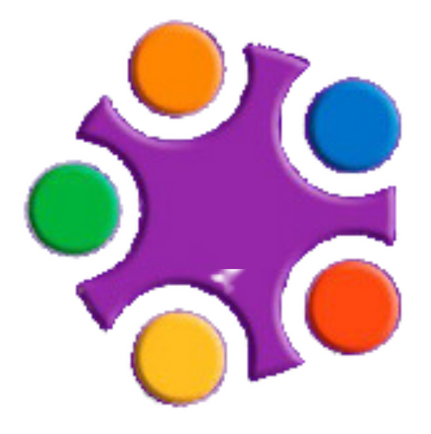
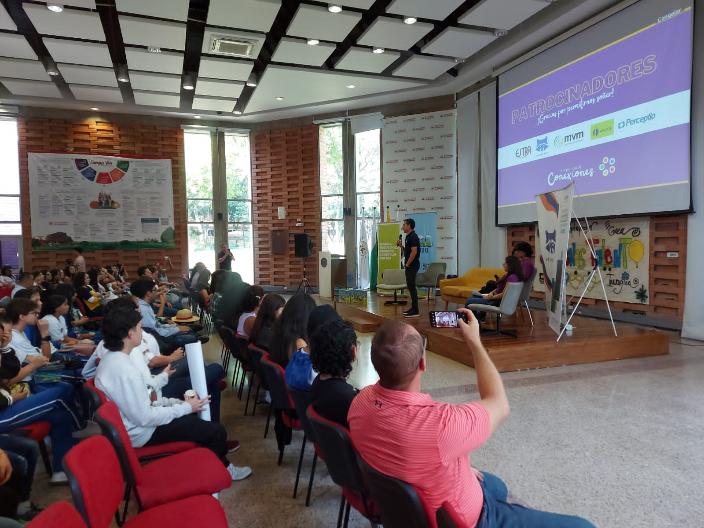
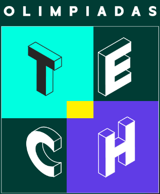
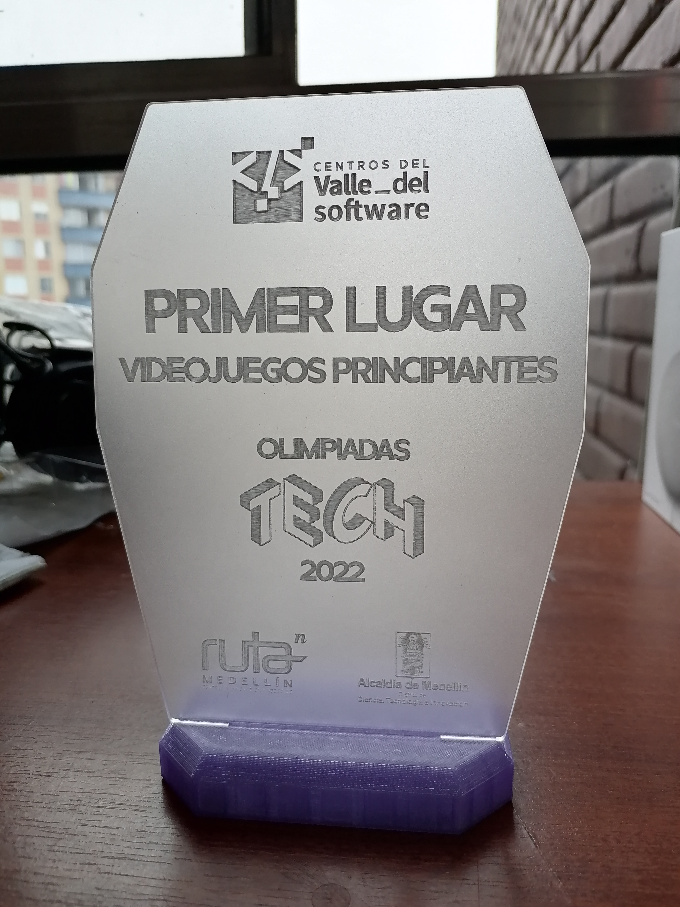

Proyectos Destacados
Jóvenes Talento
Jóvenes Talento es una inspiradora iniciativa que tiene como objetivo unir las habilidades de los jóvenes de la ciudad con el mundo empresarial y los desafíos del entorno digital. Su misión es formar a jóvenes capaces de crear soluciones, liderar y enriquecerse como individuos. La red creada por esta iniciativa conecta a diversas instituciones educativas en la ciudad de Medellín, ofreciendo desafíos empresariales cuidadosamente diseñados por reconocidas empresas colombianas como Andercol, Conconcreto y MVM. Jóvenes Talento brinda a los participantes la valiosa oportunidad de adquirir experiencia laboral y aprovechar la perspectiva fresca y renovada de los jóvenes para abordar los retos empresariales. Esta iniciativa se convierte así en un puente que une el potencial de la juventud con las oportunidades del mundo laboral, fomentando el crecimiento y la innovación en la comunidad.
  Olimpiadas Tech 2022
Las Olimpiadas Tech, en su edición del año 2022, representaron una emocionante competencia organizada por Ruta N y los Centros del Valle de Software. El objetivo de este evento era desafiar las habilidades de los participantes en diversas áreas que conforman la Cuarta Revolución Industrial. Estas áreas incluían el arte digital, los videojuegos y la robótica, campos fundamentales en la vanguardia de la tecnología. Me enorgullece haber participado en las Olimpiadas Tech 2022, junto con un talentoso equipo de trabajo que lleva por nombre "Non NPC's". Nuestra participación fue un emocionante viaje donde pusimos a prueba nuestras habilidades y conocimientos en estas áreas tecnológicas de vanguardia, que no fueron empleados en vano, dado que se nos proporcionó el primer lugar en el área de principiantes de la competencia.
 Excelencia Académica y Calidad Educativa
A lo largo de mis años de estudio en diversas instituciones educativas, he mantenido un constante compromiso con la excelencia académica. Con regularidad, mis logros en la destacada competencia en cada área de estudio han sido reconocidos y aplaudidos. Esta búsqueda de la excelencia se ha traducido en numerosos premios, medallas, diplomas y palabras elogiosas de parte de mis profesores, directores y compañeros de clase. Este estatus de excelencia no solo es un distintivo fundamental de mi identidad en el ámbito académico e institucional, sino que también contribuye significativamente a mi presentación personal y profesional. Considero que la dedicación a alcanzar altos estándares es una parte esencial de mi desarrollo y crecimiento.
Algunos de mis certificados y documentos importantes:
NPC's: Creation
Dada la participación exitosa en las Olimpiadas Tech 2022, se tomó la decisión dentro del equipo ganador, Non NPC's, de instaurar dentro de la IE Madre Laura un semillero de creación y desarrollo de videojuegos, dirigido por jóvenes para jóvenes, en el que el equipo de los Non NPC's forma e instruye a multitud de estudiantes de la Institución. Dicho proyecto, apoyado por las directivas institucionales, se encuentra liderado por mi persona, con el soporte y participación activa de todo el equipo de desarrollo. Cabe destacar que éste proyecto fue merecedor de una postulación a los Premios a la Calidad Educativa Ser Mejor, en el presente año.
Reto Asulado
En el año 2023, Jóvenes Talento planteó uno de sus retos más desafiantes, el denominado 'Reto Asulado', en el que la filial de Sura Asset Management solicitaba una solución tecnológica para modernizar su proceso de solicitudes y compras, reemplazando un anticuado sistema basado en correos electrónicos. Para abordar este reto, se formó un equipo compuesto por 12 personas de diversas instituciones educativas del área metropolitana, con el objetivo de desarrollar esta solución. Durante el desarrollo del reto, de manera natural, fui designado como líder del equipo y asumí el papel de desarrollador principal de la solución. En colaboración con el equipo, creamos una página web que funciona como plataforma para un chatbot de E-Commerce y un panel de administración integrado directamente en la página. Esta experiencia me permitió no solo liderar con éxito un proyecto desafiante, sino también contribuir significativamente al avance tecnológico y la innovación en nuestra área.
Liderazgo Generalizado
A lo largo de mi experiencia colaborando en equipos y participando en el desarrollo de soluciones, he demostrado ser un líder natural, siempre proactivo y eficiente en todos los proyectos en los que he participado. Mi enfoque en la eficacia y la colaboración ha contribuido al éxito de los equipos en diversas circunstancias. Esta habilidad para liderar y fomentar un trabajo en equipo efectivo se ha reflejado tanto en mis proyectos más recientes, como el Reto Asulado y NPC's: Creation, como en mi desempeño continuo en el aula de clases y en diversos entornos en los que me encuentro.